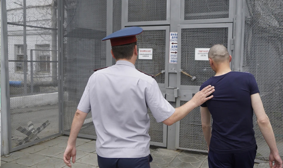

ЦИТАТА
Условное осуждение – это особая форма освобождения виновного от реального отбывания назначенного судом наказания.
По своей сути оно близко к освобождению от уголовного наказания, т.к. лицо признается виновным в совершении преступления, но освобождается от отбывания наказания. Основанием для применения условного осуждения является вывод (убежденность) суда о возможности исправления осужденного без отбывания наказания. Этот вывод суд делает, учитывая характер и степень общественной опасности совершенного преступления, личность виновного, а также смягчающие и отягчающие обстоятельства.
Характерные черты условного осуждения:
1) может быть применено в случае назначения исправительных работ, ограничения по военной службе, содержания в дисциплинарной воинской части или лишении свободы на срок до восьми лет;
2) не назначается:
- осужденным за преступления против половой неприкосновенности несовершеннолетних, не достигших четырнадцатилетнего возраста;
- осужденным за террористическую деятельность и создание организованной преступной группы;
- при совершении тяжкого или особо тяжкого преступления в течение испытательного срока при условном осуждении, назначенном за совершение умышленного преступления, либо в течение неотбытой части наказания, назначенного за совершение умышленного преступления, при условно-досрочном освобождении;
- при опасном или особо опасном рецидиве;
3) суд возлагает на условно осужденного обязательные для исполнения обязанности (это и есть условие, при выполнении которого лицо освобождается от реального отбывания наказания): не менять постоянного места жительства, работы, учебы без уведомления специализированного государственного органа, осуществляющего исправление осужденного (уголовно-исполнительной инспекции), не посещать определенные места, пройти курс лечения от алкоголизма, наркомании, токсикомании или венерического заболевания, трудиться (трудоустроиться) либо продолжить обучение в общеобразовательной организации и другие, по усмотрению суда, способствующие его исправлению;
4) суд устанавливает условно осужденному испытательный срок, в течение которого он должен доказать свое исправление.
Испытательный срок устанавливается в зависимости от размера назначенного наказания:
а) при назначении виновному лишения свободы на срок до одного года или более мягкого вида наказания — не менее шести месяцев и не более трех лет;
б) при назначении лишения свободы на срок свыше одного года — не менее шести месяцев и не более пяти лет.
При условном осуждении суд может назначить дополнительные виды наказания.
Испытательный срок может быть прекращен досрочно в следующих вариантах:
а) условно осужденный доказал свое исправление, возместил вред (полностью или частично), причиненный преступлением, и отбыл без нареканий не менее половины испытательного срока. В таком случае закон дает право уголовно-исполнительным инспекциям ходатайствовать в суд о досрочной отмене условного осуждения и о снятии с осужденного судимости;
б) условно осужденный нарушил условия условного осуждения:
- уклонился от исполнения возложенных на него судом обязанностей, от возмещения вреда, причиненного преступлением, или совершил нарушение общественного порядка, за которое он был привлечен к административной ответственности, – суд может продлить испытательный срок, но не более чем на один год;
- систематически уклоняется от возмещения вреда, причиненного преступлением, – суд может вынести решение об отмене условного осуждения и реальном исполнении наказания;
- систематически нарушал общественный порядок, за что привлекался к административной ответственности, систематически не исполнял возложенные на него судом обязанности либо скрылся от контроля – суд может вынести решение об отмене условного осуждения и реальном исполнении наказания;
- совершил преступление по неосторожности либо умышленное преступление небольшой или средней тяжести – суд может как отменить, так и сохранить условное осуждение;
- совершил умышленное тяжкое или особо тяжкое преступление – суд обязан отменить условное осуждение и назначить наказание по совокупности приговоров.